Лучшие дистанционные курсы по управлению ресторанным бизнесом
MBA Менеджмент в ресторанном бизнесе – Московская Бизнес Академия
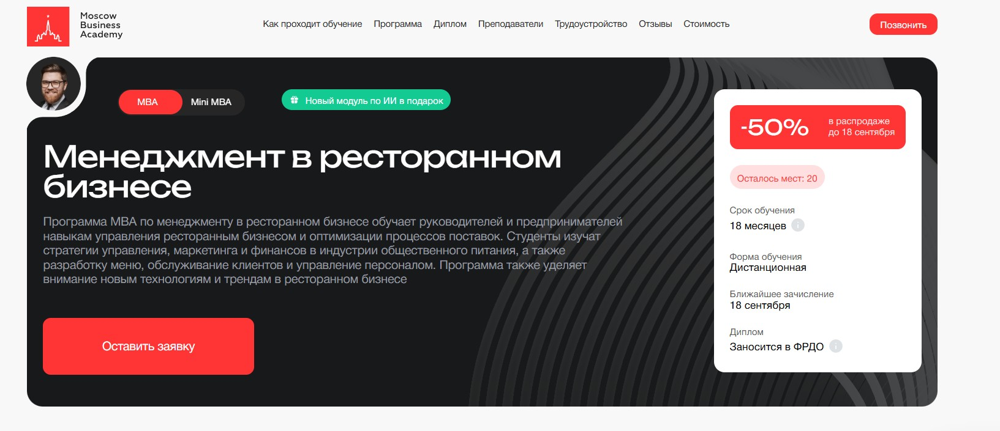⭐ Рейтинг: 5.0
- Сайт: https://moscow.mba/programs/mba/online/restaurant-management
- Полная стоимость: 285 000 ₽ с возможностью налогового вычета до 13%. Есть рассрочка без переплат.
- Рассрочка: 7 916 ₽/мес на 36 месяцев.
- Длительность: 18 месяцев.
- Документ: Международный диплом MBA с присвоением степени «Мастер делового администрирования», заносится в Федеральный реестр документов об образовании (ФРДО).
- Трудоустройство: Помощь в трудоустройстве: подготовка резюме, формирование портфолио, тренировка собеседований, рекомендации для стартапов и проектов.
Особенности курса:
Обучение построено на практическом освоении управленческих навыков в сфере общепита. Программа ежегодно обновляется и соответствует запросам рынка — последнее обновление прошло в 2025 году. Упор сделан на реальные задачи: 70% курса — практика, включая кейсы и проекты, приближенные к работе в ресторанной индустрии. Бонус — модуль по ИИ в управлении проектами. Вы сможете учиться в удобное время, из любой точки мира, на современной онлайн-платформе. Доступ к материалам открыт на весь срок обучения и после.
Преподаватели курса:
-
Дмитрий Губарев — предприниматель, бизнес-консультант, опыт в финансах и развитии проектов, аспирант РЭУ им. Плеханова.
-
Мария Егиазарова — выпускник МГУ, бизнес-психолог, спикер, специалист по командной эффективности и мотивации.
-
Евгений Литвинов — кандидат экономических наук, эксперт по аналитике, опыт работы в госструктурах и финансовых институтах.
-
Оксана Малервейн — финансовый директор с более чем 20-летним стажем в крупных корпорациях.
-
Валерия Трофимова — дипломированный экономист, работает с международными компаниями, аспирант Финансового университета при Правительстве РФ.
Кратко о программе курса:
- Современный менеджмент и стратегическое планирование (10 недель).
- Управление человеческими ресурсами и лидерство в команде (10 недель).
- Финансы в организации и управленческий учет (11 недель).
- Продвинутый маркетинг и digital-стратегии для food-проектов (11 недель).
- Цифровая трансформация и IT-технологии в общепите (10 недель).
- Стратегическое управление рестораном и сетями (20 недель).
- Бюджетирование и контроль прибыльности для ресторанного бизнеса.
- Сервис-менеджмент и организация качественного обслуживания.
- Юридические аспекты открытия и ведения заведений в общепите.
- Оценка стоимости бизнеса и проектное финансирование.
- Конкурентные стратегии и развитие форматов заведений.
- Итоговый проект на основе реальной ситуации в ресторанной сфере.
- Бонусные модули: управление изменениями, конфликты в коллективе, корпоративная ответственность.
Чему научитесь:
Вы освоите комплексные навыки управления заведением: от финансового анализа и разработки меню до найма персонала, digital-маркетинга и юридического сопровождения. Научитесь выстраивать прибыльные стратегии, повышать клиентоориентированность и внедрять современные технологии в работу ресторана.
Преимущества и особенности:
- Программа обновлена в 2025 году с учетом трендов и реальных потребностей ресторанного рынка.
- 70% практики — кейсы, проекты и задания на основе реальных бизнес-задач.
- Бонус — модуль по ИИ в управлении проектами, который помогает автоматизировать и оптимизировать процессы.
- Международный диплом, заносящийся в ФРДО, с государственной лицензией и аккредитацией.
- Помощь в трудоустройстве и карьерном росте: 62% выпускников продвигаются по службе.
- Гибкий онлайн-формат: учиться можно совмещая с работой и личной жизнью.
- Доступ к вебинарам с экспертами, поддержка кураторов и нетворкинг с руководителями из топовых компаний.
Читайте отзывы учеников:
Слушатели отмечают высокий уровень преподавателей, практическую направленность занятий и удобство платформы. Многие отмечают, что уже в процессе обучения начали применять знания — оптимизировали бюджет, запустили новые маркетинговые кампании, улучшили процессы в ресторане. Отдельно хвалят поддержку кураторов и качество материалов. Выпускники подтверждают рост доходов и карьерный рост после окончания программы.
Mini MBA Менеджмент в ресторанном бизнесе – Московская Бизнес Академия
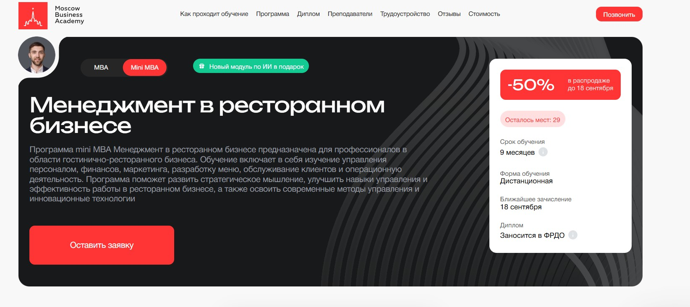⭐ Рейтинг: 5.0
- Сайт: https://moscow.mba/programs/mini/online/restaurant-management
- Полная стоимость: 206 450 рублей с возможностью оформить налоговый вычет до 13%. Грант на обучение не предоставляется.
- Рассрочка: 8 602 рубля в месяц на 24 месяца без переплат. Первый платеж — через 30 дней.
- Длительность: 9 месяцев дистанционного формата.
- Документ: Международный диплом установленного образца с присвоением степени «Мастер делового администрирования», заносится в Федеральный реестр документов об образовании (ФРДО).
- Трудоустройство: Помощь в трудоустройстве — составление конкурентного резюме, подготовка к собеседованиям, построение портфолио, консультации по запуску собственного проекта.
Особенности курса:
Обучение создано для тех, кто хочет управлять или уже руководит заведением общественного питания — от кафе и баров до ресторанов и гастрономических проектов. Программа сочетает управление, финансы, маркетинг и операционную деятельность с фокусом на реальных кейсах из индустрии общепита. Учебные материалы обновляются ежегодно — студенты получают знания, востребованные на рынке. Особое внимание уделяется практической подготовке: более 70% курса — выполнение заданий, приближенных к реальной работе. Доступ к платформе круглосуточный, можно совмещать с работой. Все слушатели получают поддержку кураторов на каждом этапе и участвуют в нетворкинге с профессионалами из ведущих компаний.
Преподаватели курса:
-
Ицхак Пинтосевич — эксперт по личностному росту, бизнес-тренер, автор 15 книг по развитию предпринимательского мышления.
-
Елена Чигаева — сертифицированный маркетолог, специалист по таргетингу и личному бренду, создатель образовательных курсов по digital-маркетингу.
-
Татьяна Елисеева — генеральный директор рекламного агентства, практик с опытом в международных брендах и крупных медиагруппах.
-
Дарья Дубровская — бывший директор по логистике и закупкам сети «ЛЕД-Эффект», эксперт по оптимизации процессов в HoReCa.
-
Ирина Германова — руководитель столичного института дополнительного образования, курирующая программы в сфере социальных услуг и общепита.
Кратко о программе курса:
- Управление бизнесом: стратегии и технологии — 10 недель.
- Основы менеджмента и командная работа.
- Управление проектами и контроль сроков.
- Операционный менеджмент и повышение эффективности процессов.
- HR-управление и мотивация персонала — 7 недель.
- Навыки руководителя и развитие лидерства — 8 недель.
- Финансовый менеджмент и бюджетирование — 7 недель.
- Маркетинг и повышение конкурентоспособности food-проектов — 7 недель.
- Стратегическое управление ресторанным бизнесом и развитие сетей — 18 недель.
- Сервис-менеджмент и качество обслуживания гостей.
- Оценка стоимости проекта и привлечение инвестиций.
- Digital-маркетинг, брендинг и промоушен еды.
- Бонусные модули: итоговый проект, организационная психология, урегулирование конфликтов, переговоры.
- Новый модуль: основы ИИ в управлении проектами.
Чему научитесь:
Вы освоите управление финансами, персоналом и операционными процессами. Научитесь разрабатывать меню, строить маркетинговые кампании, анализировать прибыль и внедрять современные технологии. Получите навыки стратегического планирования и научитесь эффективно управлять заведением или запустить собственный проект.
Преимущества и особенности:
- Обучение ведут практикующие эксперты из топовых компаний и сетей общепита.
- Программа обновляется ежегодно с учетом трендов 2025 года — актуальность гарантирована.
- 70% практики: работа с реальными кейсами, проектные задания, индивидуальные воркшопы.
- Бонус: модуль по искусственному интеллекту для оптимизации управленческих задач.
- Гибкий график — подходит для работающих. Обучение полностью онлайн.
- Нетворкинг с профессионалами из Роснефти, Сбера, HH.ru и других ведущих организаций.
- Гарантия возврата полной стоимости в течение 14 дней при расторжении договора.
- Документы государственного образца с международным приложением.
Читайте отзывы учеников:
Слушатели отмечают высокий уровень преподавателей, понятное объяснение сложных тем и практическую пользу материалов. Многие уже применяли знания в своей работе — от построения бюджета до запуска нового заведения. Студенты ценят поддержку кураторов, структурированный доступ к материалам и вовлечение в бизнес-сообщество. По отзывам, более 60% выпускников добились карьерного роста или увеличили доход.
Управление ресторанным бизнесом – Академия Eduson
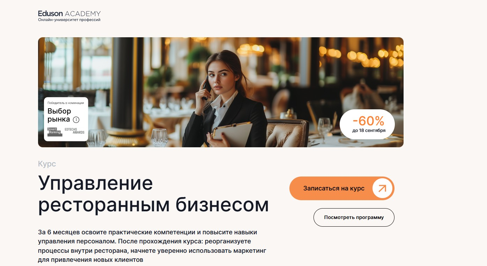⭐ Рейтинг: 5.0
- Сайт: https://eduson.academy/restaurant-business-management
- Полная стоимость: От 247 992 рублей с возможностью налогового вычета 13%.
- Рассрочка: От 8 266 рублей в месяц на 12 месяцев беспроцентно (при скидке 20 666 рублей в месяц).
- Длительность: 6 месяцев.
- Документ: Удостоверение о повышении квалификации государственного образца.
- Трудоустройство: Индивидуальная бизнес-сессия с экспертом в подарок, поддержка куратора в течение года.
Особенности курса:
Программа включает практические инструменты для работы с ресторанными POS-системами, углубленное изучение нормативных актов и реорганизацию операционных процессов. Обучение проходит через анализ реальных бизнес-кейсов, встречи с успешными директорами ресторанов и использование онлайн-тренажеров. Курс предоставляет пожизненный доступ к материалам с бесплатными обновлениями.
Кратко о программе курса:
- Введение в ресторанный бизнес: типы заведений, тренды, юридические аспекты (5 уроков)
- Управление рестораном: организационная структура, персонал, стандарты обслуживания (5 уроков)
- Финансовое управление: учет, бюджетирование, ценообразование, анализ показателей (6 уроков)
- Маркетинг и продвижение: стратегии, интернет-продвижение, работа с отзывами (6 уроков)
- Меню и управление кухней: разработка меню, работа с поставщиками, контроль качества (5 уроков)
- Обслуживание клиентов: психология клиентов, управление конфликтами (7 уроков)
- Технологии и инновации: автоматизация, системы управления, аналитика (5 уроков)
- Управление качеством и безопасностью: стандарты HACCP, санитарные нормы (6 уроков)
- Развитие и масштабирование бизнеса: франчайзинг, инвестиции (8 уроков)
- Практические занятия и кейсы: анализ реальных ситуаций, итоговый проект (6 уроков)
- Лидерство и личностное развитие: управление командой, принятие решений (4 уроков)
Чему научитесь:
Освоите современные подходы в организации ресторанного дела, научитесь синхронизировать работу отделов, использовать маркетинг для привлечения клиентов и применять менеджмент в постановке задач.
Преимущества и особенности:
- Пожизненный доступ к курсу с бесплатными обновлениями
- Практические шаблоны, конспекты и чек-листы для роста бизнеса
- Обучение без дедлайнов в удобное время
- Встречи с успешными директорами ресторанов
- Полноценная обратная связь от экспертов по домашним заданиям
- Специальные онлайн-тренажеры для практики
- Государственная лицензия на образовательную деятельность
- Скидка 5% за онлайн оплату
Читайте отзывы учеников:
Студенты отмечают высокую эффективность обучения, качество видеолекций от практикующих экспертов и возможность изучать материал в комфортном темпе. Многие подчеркивают, что получили новые знания даже при наличии собственного опыта в бизнесе, а также отмечают отзывчивость кураторов и подробные объяснения сложных тем.
Mini MBA «Менеджмент в гостиничном бизнесе» – Московский институт технологий и управления
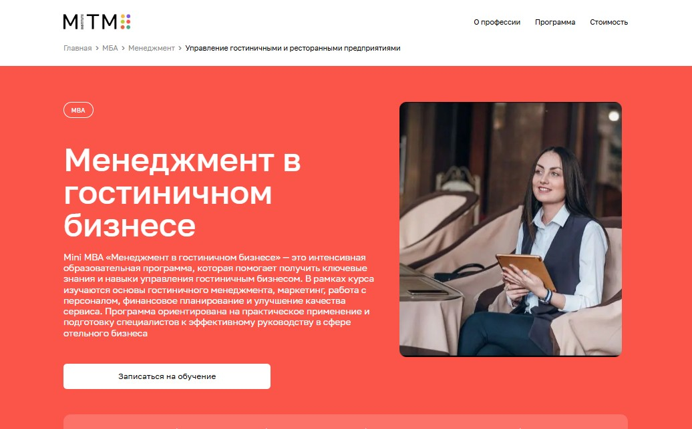⭐ Рейтинг: 5.0
- Сайт: mitm.institute/upravlenie-gostinichnymi-i-restorannymi-predpriyatiyami-1--mba
- Полная стоимость: 27 030 ₽/мес со скидкой 30% до 20 сентября, доступен налоговый вычет 13%, образовательный кредит с господдержкой и рассрочка от банков.
- Рассрочка: Беспроцентная рассрочка на 12 месяцев, от 18 930 ₽ в месяц, также доступны кредитные программы от Сбера и «Тинькофф Банка».
- Длительность: 9 месяцев дистанционного формата.
- Документ: Диплом государственного образца по программе MBA.
- Трудоустройство: Поддержка в трудоустройстве через программу содействия выпускникам, сопровождение карьерного роста и доступ к вакансиям в индустрии.
Особенности курса:
Программа Mini MBA ориентирована на тех, кто стремится эффективно управлять отелями, ресторанами и другими предприятиями сферы гостеприимства. Обучение построено на практических кейсах, современных методах маркетинга, финансового анализа и управления персоналом. Уделяется внимание стратегическому развитию бизнеса, увеличению прибыли и конкурентоспособности. Все материалы адаптированы под реалии ресторанного и отельного бизнеса, включая логистику, обслуживание, бюджетирование и цифровой маркетинг. Курс подходит как действующим управленцам, так и тем, кто хочет войти в индустрию общепита с нуля. Студенты получают доступ к записям лекций и работают с экспертами в личном кабинете.
Кратко о программе курса:
- Управление бизнесом: стратегии и управленческие технологии.
- Эффективное лидерство и развитие управленческих навыков.
- Управление человеческим капиталом: мотивация, подбор, развитие команды.
- Финансовый менеджмент: бюджетирование, анализ расходов, контроль прибыли.
- Маркетинг и повышение конкурентоспособности в индустрии гостеприимства.
- Специализация: менеджмент в гостиничных и ресторанах предприятиях.
- Организация сервиса и качества обслуживания.
- Разработка и реализация бизнес-стратегий в заведениях общепита и отелях.
- Корпоративные коммуникации и работа с клиентской базой.
- Итоговый проект: практическое применение знаний в реальном или гипотетическом бизнесе.
Чему научитесь:
Вы освоите управление отелем или рестораном с нуля: от составления меню и управления персоналом до финансового планирования и продвижения заведения. Научитесь разрабатывать маркетинговые стратегии, повышать прибыльность и эффективность работы команды.
Преимущества и особенности:
- Дистанционное обучение — можно учиться из любой точки мира без необходимости приезжать в институт.
- Государственный диплом, подтверждающий уровень MBA, без сдачи ЕГЭ — поступление по внутренним вступительным процедурам.
- Гибкая оплата: беспроцентная рассрочка и кредиты с господдержкой для снижения нагрузки на бюджет.
- Практическая подготовка к управлению реальными процессами в отеле, ресторане, кофейне или другом заведении.
- Поддержка куратора 24/7 и доступ к базе материалов даже после окончания курса.
- Программа включает бонус — курс в подарок до 18 сентября, а также возможность вернуть 13% от затрат как налоговый вычет.
- Акцент на трудоустройство: выпускники получают сопровождение при поиске работы в сфере гостиничного и ресторанного бизнеса.
Читайте отзывы учеников:
Люди отмечают удобный формат дистанционного обучения, понятные материалы и реальную пользу от программы. Многие говорят, что смогли применить знания сразу в своей работе — от улучшения финансовой отчётности до запуска нового проекта в сегменте общепита. Также часто упоминают вежливую поддержку, своевременные ответы кураторов и лёгкость подачи сложных тем. Особенно выделяют актуальные кейсы по управлению рестораном, кафе или гостиницей.
Менеджер ресторанного бизнеса – Московская Бизнес Академия
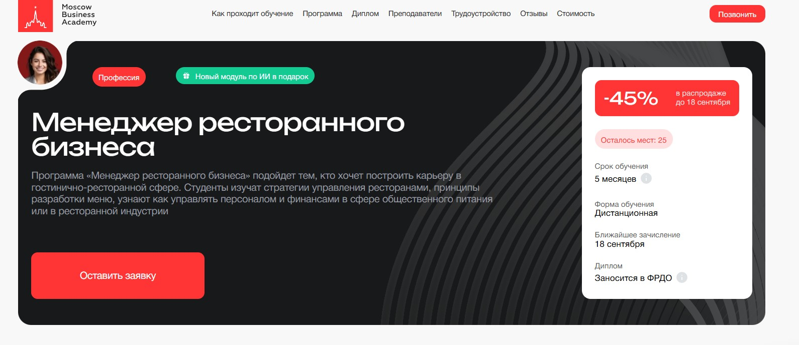⭐ Рейтинг: 4.9
- Сайт: moscow.mba/programs/profession/online/restaurant-management
- Полная стоимость: От 5 339 ₽ в месяц при рассрочке, возможность вернуть 13% через налоговый вычет. При единовременной оплате — скидка до 45% до 17 сентября.
- Рассрочка: 9 708 ₽ в месяц на 24 месяца без переплат, первый платёж — через 30 дней.
- Длительность: 5 месяцев, дистанционное обучение с гибким графиком.
- Документ: Диплом о профессиональной переподготовке, заносится в ФРДО.
- Трудоустройство: Поддержка при поиске работы: помощь в составлении резюме, подготовка портфолио, советы по прохождению собеседований и навыки самопрезентации.
Особенности курса:
Программа разработана с фокусом на практические навыки, необходимые в ресторанной индустрии. Студенты получают знания по управлению финансами, персоналом, маркетингу и операционной деятельности заведения общественного питания. Обучение включает моделирование реальных бизнес-задач — от разработки меню до внедрения систем digital-маркетинга. Курс регулярно обновляется — актуальная версия 2025 года. Все материалы доступны онлайн из любой точки мира, что позволяет совмещать учёбу с работой и личной жизнью. После основной программы — бонусный модуль по работе с ИИ в управлении проектами.
Преподаватели курса:
-
Гульназ Шарипова — основатель GeCo UAE, эксперт по логистике и управлению доставкой в ресторанах стран Персидского залива.
-
Ангелина Шам — корпоративный бизнес-психолог, кандидат наук, автор книг по коммуникациям в бизнесе.
-
Ицхак Пинтосевич — тренер по развитию бизнеса, автор более 15 обучающих программ и книг по личной эффективности.
-
Елена Чигаева — сертифицированный маркетолог, специалист по позиционированию личного бренда и food-проектов.
-
Аида Исмаилова — кандидат экономических наук, доцент, специалист по финансовому анализу в сфере общепита.
Кратко о программе курса:
- Основы ресторанного менеджмента и стратегического планирования.
- Технологии общественного питания и контроль качества блюд.
- Бюджетирование и управленческий учёт в сфере ресторанного бизнеса.
- Сервис-менеджмент и управление командой в заведениях общепита.
- IT-решения и цифровые инструменты для ресторанов.
- Конкурентные стратегии и развитие собственного food-проекта.
- Digital-маркетинг и брендинг ресторана.
- Операционное управление и контроль бизнес-процессов.
- Охрана труда и пожарная безопасность.
- Развитие личных и профессиональных качеств руководителя.
- Итоговый проект — создание бизнес-модели заведения.
- Бонус: модуль по ИИ в управлении проектами, тайм-менеджмент, командообразование, организационная психология.
Чему научитесь:
Научитесь управлять рестораном: от подбора персонала и составления меню до анализа финансы и продвижения заведения. Получите навыки работы с PEST-анализом, foodcost, брендингом и IT-инструментами. Сможете эффективно планировать ресурсы, контролировать себестоимость и выстраивать клиентоориентированный сервис.
Преимущества и особенности:
- 70% программы — практика на основе реальных кейсов из ресторанного бизнеса.
- Доступ к бонусному модулю по ИИ в управлении проектами после завершения основного курса.
- Обучение по лицензии №041221 с выдачей официального диплома, заносимого в ФРДО.
- Гибкий график: можно работать и учиться одновременно без отрыва от дела.
- Карьерная поддержка: помощь в трудоустройстве через подготовку к собеседованиям и формированию портфолио.
- Интерактивные онлайн-вебинары и поддержка кураторов на всех этапах обучения.
- Актуальные знания — обновлённая программа 2025 года с упором на современные тренды общепита.
- 65% выпускников находят работу в профильной сфере уже через 3 месяца.
Читайте отзывы учеников:
Студенты отмечают высокий уровень практико-ориентированности курса, доступность материалов и профессионализм преподавателей. Многие отмечают, что после прохождения программы смогли устроиться на позиции администратора или управляющего. Также хвалят поддержку кураторов, удобную онлайн-платформу и реальную помощь в трудоустройстве. Выпускники подчёркивают, что знания по финансовому учёту, маркетингу и управлению персоналом применимы сразу после прохождения модулей.
Ресторанный бизнес в 2025 году: открытие, управление и маркетинг – Moscow Business School
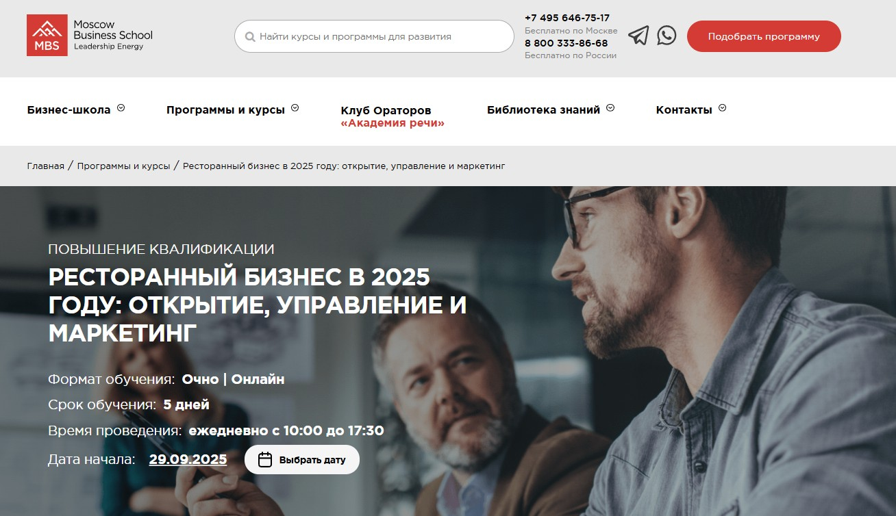⭐ Рейтинг: 4.9
- Сайт: https://mbschool.ru/seminars/218237/
- Полная стоимость: 71 900 руб. Возможна рассрочка, предусмотрена возможность налогового вычета за обучение по НДФЛ.
- Рассрочка: Условия рассрочки индивидуальны — до 12 месяцев без переплат.
- Длительность: 5 дней, ежедневно с 10:00 до 17:30.
- Документ: Удостоверение о повышении квалификации установленного образца или сертификат MBS.
- Трудоустройство: 85% выпускников получают повышение или меняют должность в течение года после завершения программы.
Особенности курса:
Программа создана для тех, кто хочет расти в сфере общепита: от владельцев и управленцев до новичков, которые только осваивают профессию ресторатора. Обучение сочетает глубокий анализ финансовых моделей, работу с командой и внедрение современного маркетинга. Уделяется внимание не только открытию заведения, но и устойчивой прибыли в условиях меняющейся экономики. Программа учит применять на практике инструменты управления, бюджетирования, работы с поставщиками и внедрять импортозамещение. Участники получают навыки, которые можно сразу использовать в текущей деятельности. Преподаватели — эксперты с реальным опытом в крупных сетях, таких как «Тануки», «Росинтер» и Black Star Burger. Формат включает очное и онлайн-обучение, практикумы и разбор кейсов из реальной работы.
Преподаватели курса:
-
Орлова Элеонора Владимировна — консультант по управлению ресторанного бизнеса, специалист по оптимизации операций и стандартов обслуживания.
-
Петровнин Николай Николаевич — эксперт с 25-летним стажем в индустрии общественного питания, прошёл путь от официанта до операционного директора. Опыт работы в foodtech и развитии сетей: Cofix, Росинтер, Black Star Burger.
Кратко о программе курса:
- Организация работы заведения: стандарты, документооборот, финансы.
- Управление персоналом: мотивация, кадровый резерв, корпоративная культура.
- Маркетинг и продажи: клиентоориентированность, продвижение, работа с картой территории.
- Финансовая устойчивость: себестоимость, ФОТ, бюджетирование, пути роста прибыли.
- Сервис доставки: запуск, логистика, взаимодействие с агрегаторами, диджитализация.
- Практикумы по созданию меню, калькуляции, SWOT-анализу и стратегии развития.
- Работа с проверяющими, разрешительная документация, нормативы.
- Аналитика и цифровые инструменты: CRM, SMM, акции, лояльность гостей.
Чему научитесь:
Научитесь управлять рестораном эффективно: от подбора команды до анализа доходов и маркетинговых стратегий. Создадите устойчивую бизнес-модель, внедрите стандарты и оптимизируете расходы. Освоите доставку, работу с поставщиками и привлечение гостей.
Преимущества и особенности:
- Преподаватели — действующие эксперты с реальным опытом в известных сетях.
- Практическая направленность: кейсы, моделирование процессов, работа с текущими задачами участников.
- Высокая востребованность документа: сертификат MBS признают ведущие компании общепита.
- Поддержка после обучения: доступ к закрытому бизнес-клубу и карьерные перспективы.
- Удостоверение установленного образца подтверждает квалификацию для работодателей.
- Гибкие форматы: очно и онлайн, подойдёт для занятых управленцев.
Читайте отзывы учеников:
Участники отмечают высокое качество подачи материала, доступность преподавателей и полезность практикумов. Многие подчёркивают, что программа помогла глубже понять финансовые процессы, перестроить работу заведения и внедрить успешные акции. Отдельно хвалят небольшой размер группы — это позволяет задать вопросы и получить персональные рекомендации. Выпускники отмечают рост доходности и улучшение управления командой уже после первых недель внедрения знаний.
Менеджмент в ресторанном бизнесе – Московский Институт Профессионального Образования
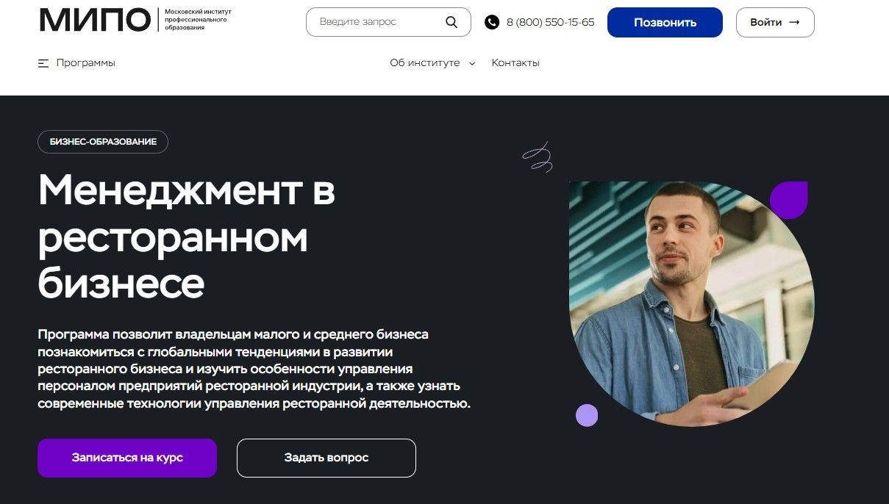⭐ Рейтинг: 4.9
- Сайт: mipo.msk.ru/mba/menedzhment-v-restorannom-biznese-1
- Полная стоимость: Уточняется при записи, доступна возможность оформить налоговый вычет — верните 13% от суммы обучения.
- Рассрочка: Предусмотрена беспроцентная рассрочка — от 6 500 рублей в месяц на выгодных условиях.
- Длительность: 1 год 6 месяцев (2700 часов).
- Документ: Диплом MBA — Master of Business Administration, с занесением данных в Федеральный реестр ФИС-ФРДО и международным приложением.
- Трудоустройство: 72% выпускников переходят в более престижные компании, 94% отмечают рост доходов в собственном бизнесе.
Особенности курса:
Программа разработана для предпринимателей, владельцев заведений и управленцев общепита, стремящихся вывести свой бизнес на новый уровень. Обучение проходит полностью дистанционно — вы учитесь из любой точки мира, совмещая с работой. Курс включает практико-ориентированные модули от ведущих экспертов рынка, актуальные кейсы, видеоматериалы с заданиями и поддержку личного куратора на всех этапах. Преподаватели — действующие консультанты и владельцы успешных проектов в сфере ресторанного дела, гостиничного бизнеса и food-индустрии. Учебные материалы регулярно обновляются, включены современные тренды 2025 года: цифровизация, IT-инструменты для продвижения, управление себестоимостью и работа с персоналом.
Преподаватели курса:
-
Дмитрий Коноплянский — основатель сети ювелирных салонов, советник крупных корпораций. Делится опытом масштабирования бизнеса и стратегического управления.
-
Сергей Ряковский — эксперт по стратегическому менеджменту, автор пособий по управлению командами и мотивации персонала.
-
Траншье Янник — специалист в инновационном менеджменте, технологический брокер с международным опытом.
-
Татьяна Баранова — эксперт по деловому этикету, основатель образовательного проекта «Про ЭТИКЕТ».
-
Александр Борисов — специалист по финансовому анализу, инвестициям и бизнес-планированию в сфере общепита.
-
Александр Додерер — основатель агентства стратегических коммуникаций, опыт в брендинге и продвижении food-проектов.
Кратко о программе курса:
- Стратегический менеджмент: построение долгосрочного развития заведения.
- Управление проектами: запуск и развитие новых направлений в ресторане или кафе.
- Организационное поведение: навыки руководства командой, мотивация персонала, разрешение конфликтов.
- Бизнес-планирование: от идеи до открытия прибыльного заведения.
- Бюджетирование и управленческий учет: контроль расходов, расчет рентабельности, анализ финансовых показателей.
- IT-технологии в ресторанах: автоматизация, CRM-системы, онлайн-заказы, электронное меню.
- Маркетинг и продвижение: создание стратегии, digital-инструменты, работа в соцсетях, привлечение гостей.
- Практические кейсы: разбор реальных бизнес-ситуаций из ресторанной индустрии.
Чему научитесь:
Вы освоите современные подходы к управлению общепитом: научитесь выстраивать финансовый контроль, мотивировать официантов и поваров, разрабатывать меню с учетом рентабельности, продвигать заведение в цифровой среде и строить долгосрочную бизнес-стратегию.
Преимущества и особенности:
- Диплом MBA с международным приложением — работает в России и за рубежом.
- Обучение в удобном темпе без отрыва от работы, доступ к онлайн-платформе 24/7.
- Преподаватели — действующие практики с опытом от 7 до 25 лет в food-индустрии.
- Личный куратор сопровождает до получения диплома, помогает с заданиями и обратной связью.
- Программа обновляется по результатам анализа рынка и трендов 2025 года.
- 96% выпускников довольны качеством контента и поддержкой на курсе.
- Возможность вернуть 13% стоимости обучения через налоговый вычет.
- Подходит владельцам, управленцам и тем, кто планирует открыть своё кафе или ресторан.
Читайте отзывы учеников:
Бывшие слушатели отмечают высокий уровень преподавателей, актуальность материала и удобный дистанционный формат. Многие подчёркивают, что курсы помогли систематизировать знания, наладить учёт, улучшить взаимодействие с командой и увеличить прибыль. Особенно ценят поддержку кураторов, доступность материалов и возможность пересматривать вебинары. Практические задания и разбор кейсов помогают сразу применять навыки в реальной работе.
Управляющий рестораном – Skillbox
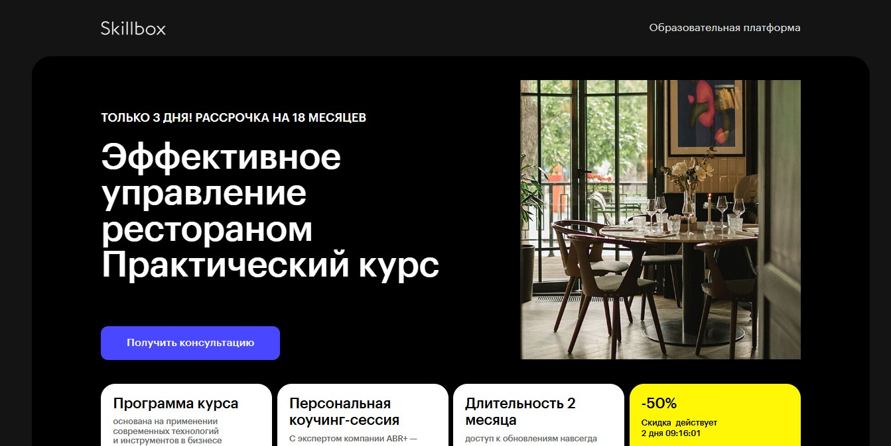⭐ Рейтинг: 4.8
- Сайт: skillbox.ru/course/restaurantmanager/
- Полная стоимость: 12 500 ₽/мес, по скидке 6 250 ₽/мес. Возможно оформить налоговый вычет за обучение.
- Рассрочка: От 6 250 рублей в месяц на 12 месяцев без переплат.
- Длительность: 2 месяца. Доступ к материалам и обновлениям – навсегда.
- Документ: Сертификат об окончании курса.
- Трудоустройство: Поддержка карьерного роста, помощь в составлении резюме, персональная коучинг-сессия с экспертами индустрии.
Особенности курса:
Программа создана на основе реального опыта компании ABR+, управляющей 50 ресторанами и имеющей 10 лет присутствия в бизнесе СНГ. Обучение построено вокруг современных практик: диджитализация, учёт себестоимости, управление командой, контроль логистики и продвижение заведений. Вы получите инструменты для запуска и масштабирования проектов даже с нуля. Формат предусматривает индивидуальное обучение, обратную связь от куратора и работу над итоговым проектом. В подарок — год английского и бонусный курс по маркетингу.
Преподаватели курса:
-
Екатерина Нарожная — управляющая ресторана «Афиша», вошедшего в Топ-5 лучших заведений Казахстана по версии WHERETOEAT 2023.
-
Максим Кучерявых — шеф-координатор сети «Cafeteria», 13 лет в ресторанной кухне, более чем 20 оптимизированных проектов.
-
Ажар Тусупбекова — территориальный директор «Cafeteria», управляла одновременно 3000-местной посадкой, опыт в крупных мероприятиях, включая ЭКСПО.
-
Маргарита Амангельдиева — директор флагманского ресторана сети “Del Papa”, более 9 лет в управлении проектами общепита.
Кратко о программе курса:
- Структура ресторана и зоны ответственности.
- Финансовое планирование: бюджет, прибыль, расходы, расчёт зарплат.
- Найм, адаптация и мотивация персонала.
- Брендинг заведения и маркетинговые стратегии.
- Организация атмосферы и коммуникаций с гостями.
- Кухонный менеджмент и производственные процессы.
- Организация кейтеринга и корпоративных мероприятий.
- Сервис доставки еды и его эффективность.
- Диджитализация: переход бизнес-процессов в онлайн.
- Юридические аспекты открытия и ведения заведения.
- Итоговый проект: разработка полноценного управленческого плана.
- Бонусный курс: маркетинг в ресторанном бизнесе.
Чему научитесь:
Научитесь управлять рестораном эффективно: контролировать финансы, мотивировать персонал, оптимизировать процессы, работать с доставкой и продвигать заведение. Получите навыки, востребованные в 1840 компаниях, где требуются специалисты по управлению проектами в общепите.
Преимущества и особенности:
- Обучение от экспертов реального бизнеса с опытом в 50+ ресторанах.
- Доступ к материалам на долгий срок — учиться можно в любом темпе.
- Персональная коуч-сессия с лицензированным коучем и лидером направления ABR+.
- Реальная практическая польза: отчётность, расчёт себестоимости, делегирование задач.
- Поддержка карьерного роста и помощь в трудоустройстве.
- Бесплатные бонусы: год английского и курс по маркетингу.
- Итоговый проект как основа для запуска собственного заведения.
- Возможность начать карьеру с нуля, даже без опыта в общепите.
Читайте отзывы учеников:
Студенты отмечают практическую направленность курса, понятное изложение материала и высокое качество сопровождения со стороны кураторов. Многие подчёркивают, что смогли уже на этапе обучения внедрить знания в работу, улучшить финансовый контроль, повысить доход и сократить издержки. Особенно хвалят поддержку от экспертов ABR+ и удобство формата — можно совмещать с работой. Отмечают, что курс помог в трудоустройстве и переходе на руководящую должность.
«Ресторанный бизнес: управление предприятием питания» – Национальная академия дополнительного профессионального образования
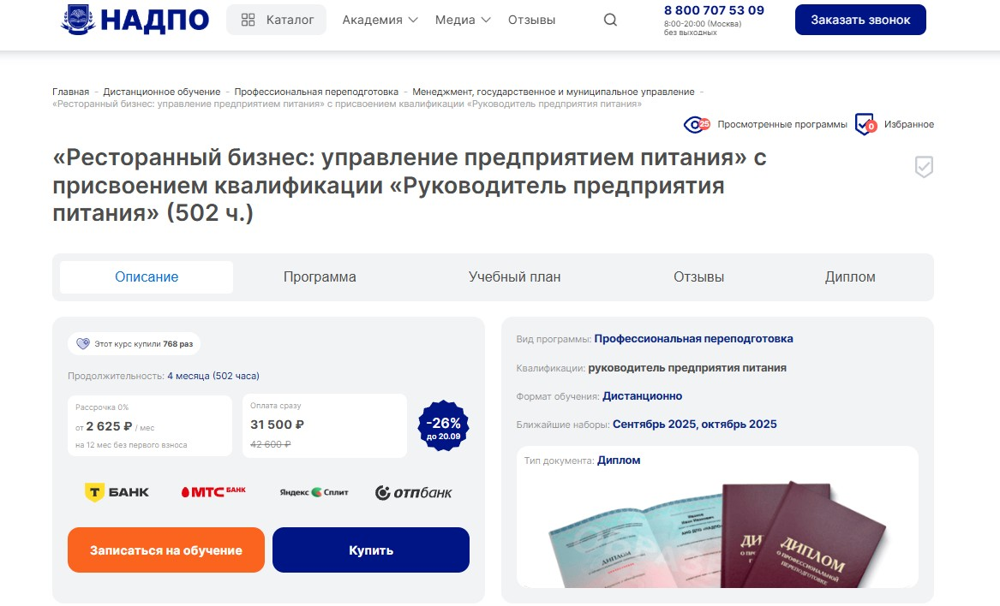⭐ Рейтинг: 4.8
- Сайт: nadpo.ru/do/restorannyy-biznes-upravlenie-predpriyatiem-pitaniya-s-prisvoeniem-kvalifikatsii-menedzher-v-oblasti/
- Полная стоимость: 31 500 ₽ (со скидкой 42 600 ₽ → 31 500 ₽, −26%). Возможен налоговый вычет 13% (до 3900 ₽).
- Рассрочка: от 2 625 ₽/мес на 12 месяцев с 0% переплат.
- Длительность: 4 месяца (502 академических часа).
- Документ: Диплом о профессиональной переподготовке установленного образца, вносится в ФИС ФРДО.
- Трудоустройство: Поддержка от HR-эксперта, помощь в составлении резюме, подбор вакансий, рассылка предложений от партнёров, консультации по трудоустройству.
Особенности курса:
Обучение построено на практике – более 30% занятий включают реальные кейсы из жизни ресторанного бизнеса. Учись управлять заведением питания без опыта, из любой точки России, в удобное время. Программа соответствует ФГОС, разработана практикующими экспертами с учётом современных трендов. Доступ к материалам сохраняется навсегда, а диплом даёт право работать по профессии и открыть частную практику. В подарок – доступ к библиотекам ЛитРес и Библиоклуб.
Преподаватели курса:
-
Тарасов Сергей Васильевич — кандидат психологических наук, доцент, стаж работы с 2000 года.
-
Егорова Наталья Николаевна — кандидат психологических наук, 22 года опыта в научной и практической деятельности.
-
Челнокова Ирина Александровна — кандидат психологических наук, член Российской ассоциации КПТ, с 2008 года в профессии.
-
Санжапова Эльмира Викоровна — кандидат педагогических наук, доцент, практический стаж с 2005 года.
-
Галдина Александра Михайловна — клинический психолог, преподаватель, профессиональный стаж с 2011 года.
Кратко о программе курса:
- Типы предприятий общественного питания и их особенности.
- Классификация ресторанов: от кафе до финальных проектов.
- Принципы ресторанного сервиса и организация гостеприимства.
- Пошаговая процедура открытия заведения: от идеи до запуска.
- Создание и калькуляция меню с учётом себестоимости и спроса.
- Организация технологических процессов на кухне и в зале.
- Кадровая политика: подбор, адаптация и мотивация персонала.
- Сервис для гостей: от бронирования до финального чека.
- Традиции и виды обслуживания в ресторанах разного формата.
- Дизайн интерьеров и его влияние на восприятие заведения.
- Этика в сервисе и корпоративная культура команды.
- Формирование имиджа и фирменного стиля ресторана.
- Маркетинг: продвижение, работа с отзывами, привлечение клиентов.
- Анализ тенденций и прибыльных стратегий в индустрии общепита.
- Итоговая аттестация: экзамен по всем темам программы.
Чему научитесь:
Вы научитесь управлять рестораном: составлять меню, контролировать бюджет, подбирать и обучать персонал, выстраивать маркетинг и повышать прибыльность заведения. Получите готовый инструментарий для работы директором по питанию.
Преимущества и особенности:
- Диплом с правом работы, вносится в государственный реестр ФРДО.
- 0% рассрочка от 1 000 ₽/мес — доступно уже сейчас.
- 80% преподавателей — кандидаты наук и практики отрасли.
- HR-наставничество: от резюме до трудоустройства в сети общепита.
- Гибкий график без дедлайнов — учитесь, когда удобно.
- Более 30% практики и 190 часов практических заданий.
- Бесплатный доступ к ЛитРес и Библиоклуб на весь период.
- Лицензия Минобрнауки РФ, программа по ФГОС.
Читайте отзывы учеников:
Слушатели отмечают чёткую структуру курса, практико-ориентированные задания и реальную помощь в поиске работы. Многие уже устроились управляющими или открыли своё кафе после обучения. Пользователи хвалят преподавателей, оперативную поддержку и удобную платформу. Академия получила высокие оценки в Яндекс, Google и 2GIS — в среднем 4.8–5.0 на 5000+ отзывов.
Менеджмент ресторанного бизнеса – Институт профессионального образования (ИПО)
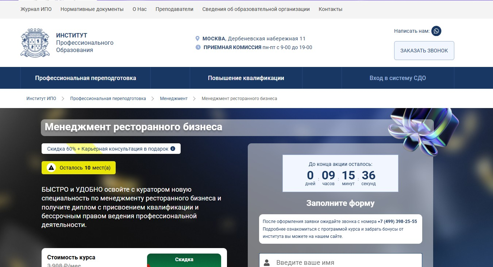⭐ Рейтинг: 4.7
- Сайт: ipo.msk.ru/professionalnaja-perepodgotovka/menedzhment/menedzhment-restorannogo-biznesa/
- Полная стоимость: 37 500 ₽ вместо 93 800 ₽ с учётом скидки 60%. Возможен налоговый вычет 13% за обучение. Грант не предоставляется.
- Рассрочка: От 1 563 ₽ в месяц на 12, 24 или 36 месяцев.
- Длительность: До 6 месяцев. При желании срок можно сократить в 2 раза.
- Документ: Диплом о профессиональной переподготовке с присвоением квалификации «Менеджер предприятия питания» с бессрочным правом на работу.
- Трудоустройство: Доступ к Центру развития карьеры, карьерная консультация в подарок, помощь в построении профессиональной стратегии.
Особенности курса:
Программа подготовлена совместно с практикующими экспертами из сферы общепита и управления заведениями. Обучение ведётся дистанционно с полной поддержкой куратора. Учебные материалы включают актуальные кейсы, вебинары от руководителей ресторанов и бизнес-консультантов. Все дипломы вносятся в федеральную систему ФИС-ФРДО и действительны по всей России. Слушатели получают доступ к библиотеке Юрайт и базе знаний по управлению, финансам и маркетингу в ресторанном деле.
Преподаватели курса:
-
Олег Ульянкин — кандидат экономических наук, специалист по стратегическому управлению.
-
Виктория Смагина — кандидат экономических наук, эксперт в сфере финансовой устойчивости бизнеса.
-
Екатерина Ветрова — кандидат экономических наук, автор методик оценки эффективности в сфере услуг.
-
Сергей Морозов — действующий директор компании в индустрии общепита.
-
Дмитрий Моторин — бизнес-тренер с опытом в коучинге управленческих команд.
-
Александр Борисов — консультант и тренер по развитию ресторанного бизнеса.
-
Татьяна Кузнецова — бизнес-тренер, эксперт по клиентскому сервису.
-
Дарья Михновец — психолог, специализируется на тимбилдинге и мотивации персонала.
-
Михаил Шакаров — бизнес-тренер, фокус на операционное управление.
-
Алексей Назаров — эксперт по системам продаж и повышению прибыльности заведений.
-
Оксана Третьякова — основатель HR-агентства, разработчик стратегий для брендов вроде Deloitte.
Кратко о программе курса:
- Стратегическое управление в ресторанном бизнесе: постановка целей, разработка плана развития.
- Правовые аспекты открытия и ведения заведений общепита.
- Формирование команды: подбор персонала, адаптация, мотивация.
- Управление клиентским сервисом: стандарты обслуживания, работа с жалобами.
- Контроль производственной и хозяйственной деятельности.
- Финансовое планирование: бюджетирование, оценка прибыльности, себестоимость блюд.
- Глобальные тренды в индустрии: устойчивое развитие, цифровизация, гастрономические инновации.
- Работа с рисками: анализ угроз, антикризисные стратегии.
- Ключевые показатели эффективности (KPI) для ресторанов, кафе и баров.
- Реализация стратегии: контроль, корректировки, масштабирование.
- Маркетинг и продвижение заведения: позиционирование, работа с отзывами, реклама.
- Организация кальяной, кофеен, банкетных залов.
Чему научитесь:
Вы освоите основы управления заведениями общественного питания: от подбора персонала до финансовой устойчивости. Научитесь строить бизнес-модель, управлять командой, анализировать эффективность и внедрять современные сервисные стандарты.
Преимущества и особенности:
- Дистанционное обучение с гибким графиком — можно совмещать с работой.
- Персональный куратор на всех этапах — поддержка, проверка заданий, помощь в аттестации.
- Практическая ориентация: вебинары от действующих рестораторов и реальные кейсы.
- Доступ к библиотеке Юрайт и курсам по карьерному росту в подарок.
- Документы действительны по всей России и вносятся в государственный реестр.
- Рассрочка без переплат на длительный срок — доступно от 1 563 ₽ в месяц.
- Бонус — карьерная консультация и доступ к центру развития.
Читайте отзывы учеников:
Слушатели отмечают чёткую структуру курса, высокую квалификацию преподавателей и реальную применимость знаний. Многие подчёркивают поддержку кураторов, удобство платформы и оперативную помощь при сдаче работ. Пользователи хвалят доступную цену при высоком уровне подготовки и возможность быстро переквалифицироваться в сферу общепита.
Менеджмент в гостиничном и ресторанном бизнесе – Московский университет профессионального переподготовки
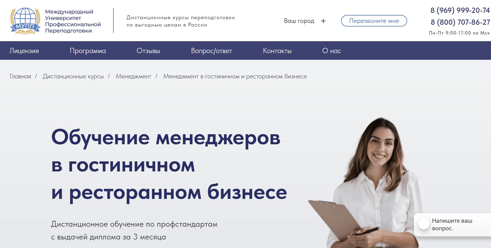⭐ Рейтинг: 4.7
- Сайт: mupp-dpo.ru/kursy/menedzhment_v_gostinichnom_biznese
- Полная стоимость: от 10 800 руб. за полный курс с возможностью оформить налоговый вычет 13%. Гранты на обучение не предусмотрены.
- Рассрочка: беспроцентная рассрочка на весь период обучения — 3 месяца.
- Длительность: 3 месяца (520 часов).
- Документ: диплом установленного образца о профессиональной переподготовке, заносится в ФИС ФРДО.
- Трудоустройство: нет прямой программы трудоустройства, но выпускникам доступны материалы для продвижения в соцсетях и модуль для предпринимателей.
Особенности курса:
Обучение проходит полностью онлайн — можно совмещать с работой. Курс соответствует профстандартам и подойдёт тем, кто хочет управлять заведением в сфере гостеприимства. Вы получите бессрочный доступ к учебным материалам, дополнительные сертификаты и документы, проверяемые в реестре Рособрнадзора. Программа включает практические модули по управлению персоналом, финансами заведений, маркетингу и обслуживанию. Подходит как начинающим, так и действующим менеджерам, директорам, рестораторам, администраторам. После окончания вы сможете грамотно организовывать работу общепита, повышать прибыль и внедрять эффективные бизнес-стратегии.
Кратко о программе курса:
- Основы гостеприимства и управленческой деятельности в отелях и кафе.
- Организация работы персонала: подбор, обучение, мотивация.
- Финансовое управление: бюджетирование, себестоимость блюд, контроль прибыльности.
- Маркетинг в ресторане и гостинице: продвижение, работа с отзывами, привлечение гостей.
- Обслуживание клиентов: стандарты сервиса, урегулирование конфликтов.
- Технологии управления заведениями: открытие, организация кухни и зала.
- Налогообложение и правовое сопровождение бизнеса в сфере общепита.
- Работа с поставщиками, складом, инвентарём.
- Подготовка меню, ценообразование, работа с калькуляторами.
- Управление в условиях кризисов и сезонных колебаний.
Чему научитесь:
Освоите навыки управления рестораном или отелем с нуля, научитесь строить бизнес-модель, развивать прибыльные направления и эффективно руководить командой. Получите знания, чтобы открыть своё заведение или вырасти на карьерной лестнице.
Преимущества и особенности:
- Обучение на 100% дистанционно — можно учиться из любого города России.
- Диплом вносится в федеральный реестр ФИС ФРДО и проверяется на сайте Рособрнадзора.
- Доступ к материалам остаётся навсегда — можно возвращаться к урокам в любой момент.
- Беспроцентная рассрочка — оплата частями без переплат.
- На все оплаты распространяется налоговый вычет 13%.
- Преподавательская поддержка и помощь кураторов на всех этапах.
- Дополнительные материалы: сертификат углублённого изучения, SMM-модуль, приложения к диплому.
Читайте отзывы учеников:
Бывшие слушатели отмечают удобный формат дистанционного обучения, качественные учебные материалы и внимательных кураторов. Многие подчёркивают, что документы оформлены без ошибок и проходят проверку в госсистемах. Студенты довольны модулями по управлению, продвижению и финансам, особенно ценят приложения к дипломам с пройденными дисциплинами. Отзывы показывают, что выпускники успешно применяют знания на практике и выходят на новую работу или запускают собственный бизнес в сфере общепита.
Онлайн-курсы управляющего рестораном – Международная школа профессий
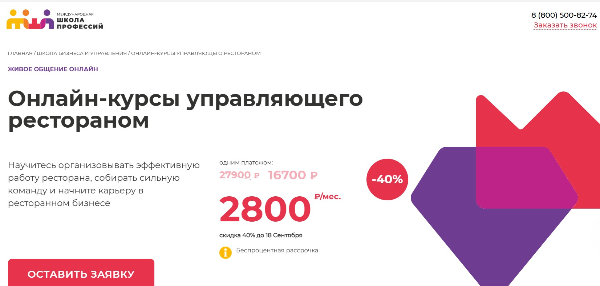⭐ Рейтинг: 4.7
- Сайт: online.videoforme.ru/business_school/restaurant-management-courses-web
- Полная стоимость: 27 900 ₽ со скидкой до 11 сентября (вместо 46 500 ₽), возможность вернуть 13% через налоговый вычет. Доступна оплата материнским капиталом до 100% и по программе «Социальный контракт» до 30 000 ₽.
- Рассрочка: от 2 800 ₽ в месяц на 6 месяцев без переплат и процентов.
- Длительность: 5 недель, 2 занятия в неделю по 1,5 часа — всего 10 практических модулей.
- Документ: Персональный сертификат об окончании программы.
- Трудоустройство: Поддержка при старте карьеры в общепите, помощь в создании реального управленческого проекта, доступ к закрытой профессиональной базе знаний для роста в индустрии.
Особенности курса:
Программа разработана для тех, кто хочет освоить управление рестораном с нуля или повысить свою эффективность в уже действующем заведении. Обучение проходит в онлайн-формате с живым общением, доступом к записям и интерактивным заданиям на 3 месяца. Занятия ведут практикующие специалисты из международных сетей общепита. Упор сделан на реальные кейсы: от построения меню и контроля себестоимости до управления персоналом и обработки обратной связи. Гибкое расписание позволяет совмещать учёбу с работой или путешествиями. Подойдёт как начинающим, так и действующим управленцам, стремящимся к росту прибыли и улучшению сервиса.
Преподаватели курса:
-
Наталья Младшева — управляющая российских и международных ресторанов, более 12 лет опыта. Запустила 6 успешных проектов разного формата, формирует команды от 100+ человек. Эксперт в операционке, финансах и клиентском сервисе в HoReCa.
Кратко о программе курса:
- Управление рестораном: ключевые инструменты и содержание.
- Командообразование: как собирать и удерживать кухню и зал.
- Коммуникация с персоналом: эффективные диалоги, мотивация, обратная связь.
- Управление продажами: стратегии роста выручки и вовлечённости гостей.
- Закупки и меню: расчёт себестоимости, формирование рентабельного меню.
- Сервис в индустрии общепита: стандарты, процессы, контроль качества.
- Работа с гостями: управление ожиданиями, конфликтные ситуации.
- Обработка обратной связи: использование отзывов для роста заведения.
- Системы управленческого учёта: отчётность, аналитика, контроль прибыльности.
- Аспекты безопасности: нормативы, чистота, пищевые риски, кадровые вопросы.
Чему научитесь:
Научитесь организовывать работу заведения, управлять командой, составлять меню с высокой маржинальностью и выстраивать сервис, который приносит лояльных гостей и рост дохода.
Преимущества и особенности:
- Обучение онлайн с живыми вебинарами и поддержкой наставников.
- Практические задания с разбором реальных кейсов из ресторанного бизнеса.
- Гибкий график — можно начать обучение в любой день и совмещать с основной занятостью.
- Доступ к библиотеке материалов по диджиталу, маркетингу и управлению в общепите.
- Возможность оплаты маткапиталом и участие в социальных программах.
- Преподаватели — действующие управляющие с опытом запуска прибыльных проектов.
- Повышенная востребованность выпускников: программа ориентирована на карьерный рост в HoReCa.
- Сертификат, подтверждающий профессиональные компетенции в управлении заведениями.
Читайте отзывы учеников:
Слушатели отмечают чёткую структуру материала, практическую пользу каждого модуля и высокий уровень подготовки наставников. Многие подчёркивают, что знания можно применять сразу после занятий — от переговоров с поставщиками до построения системы мотивации. Высокая оценка за удобный онлайн-формат и доступность объяснений даже для новичков в общепите. Учащиеся отмечают рост уверенности и готовность брать на себя управленческие задачи уже в процессе обучения.
Менеджмент в гостиничном и ресторанном бизнесе – Высшая Академия Дополнительного Образования (ВАДО)
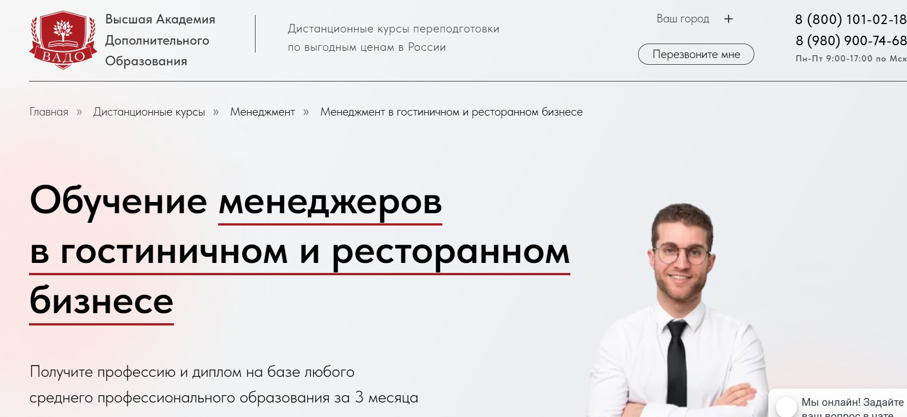⭐ Рейтинг: 4.6
- Сайт: vado-dpo.ru/kursy/menedzhment_v_gostinichnom_biznese
- Полная стоимость: 16 300 рублей. Возможна оплата в рассрочку 50/50 без переплат. Налоговый вычет при оплате обучения предусмотрен.
- Рассрочка: 50% при старте, 50% через месяц.
- Длительность: 3 месяца (520 часов), дистанционно, без отрыва от работы.
- Документ: Диплом о профессиональной переподготовке установленного образца, заносится в реестр ФИС ФРДО.
- Трудоустройство: Помощь в трудоустройстве не указана, но выпускники отмечают высокую востребованность полученных навыков на рынке.
Особенности курса:
Обучение построено на практико-ориентированной программе, разработанной по действующим профессиональным стандартам. Подходит для начинающих специалистов, предпринимателей и действующих менеджеров, желающих перейти в сферу общепита или гостиничного дела. Занятия проходят полностью онлайн – достаточно иметь доступ к интернету и устройству. Учебные материалы остаются у слушателя навсегда. Программа включает углубленное изучение экономики заведения, стандартов сервиса, управления персоналом и организации ресторанного бизнеса. Бесплатная доставка документов курьером по России.
Преподаватели курса:
-
Круглов К.Л. – практикующий менеджер в гостиничной отрасли с 2015 года.
-
Акимова В.П. – руководитель отдела развития в гостиничном консалтинговом агентстве, опыт с 2012 года.
-
Гордеева Т.Д. – методист и преподаватель техникума ТУС, работает в сфере образования с 2004 года.
Кратко о программе курса:
- Правовые основы и профессиональные стандарты в индустрии гостеприимства.
- Классификация средств размещения: отели, хостелы, апартаменты.
- Технологии работы ресторанного бизнеса: от подбора персонала до подачи блюд.
- История и традиции развития гостиничного и ресторанного сервиса.
- Экономика общепита: расчёт себестоимости, бюджетирование, прибыльность.
- Управление персоналом: мотивация, подбор, адаптация сотрудников.
- Стандарты гостеприимства и организация обслуживания гостей.
- Практические аспекты для предпринимателей: открытие и ведение своего заведения.
Чему научитесь:
Научитесь грамотно управлять рестораном или отелем, организовывать работу персонала, рассчитывать прибыль и решать конфликты с клиентами. Получите компетенции для старта карьеры или открытия собственного бизнеса в сфере общепита.
Преимущества и особенности:
- Диплом вносится в федеральный реестр ФИС ФРДО — действует по всей России.
- Обучение без отрыва от работы — подходит для занятых людей.
- Низкая стоимость при высоком уровне подготовки — один из самых доступных курсов в РФ.
- Бессрочный доступ к материалам — можно пересматривать уроки в любое время.
- Подарочный сертификат на 5 000 рублей для повторного обучения или в подарок.
- Сертификат оценки компетенции — бесплатно при окончании, экономия до 6 000 ₽.
- Онлайн-платформа с видеоуроками и практическими заданиями — комфортный формат.
- Поддержка куратора на всех этапах — помощь при сдаче итоговой работы.
Читайте отзывы учеников:
Выпускники отмечают скорость оформления документов, качественные материалы и удобство онлайн-формата. Многие подчёркивают, что знания сразу применили на практике. Особенно ценят отсутствие давления, гибкий график и реальную помощь при оформлении договора и оплаты. Положительные отклики о кураторах, точности информации и быстрой доставке дипломов.